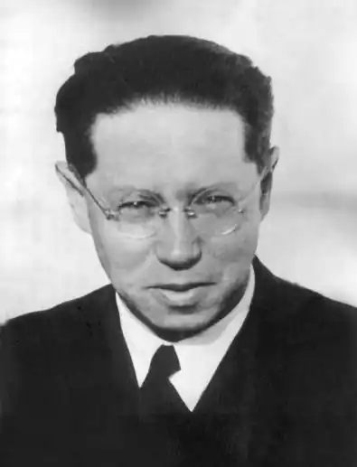
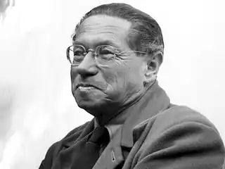

Фейхтвангер Ліон (Feuchtwanger, Lion — 07.07. 1884, Мюнхен — 21.12.1958, Лос-Анджелес) — німецький письменник.Народився в ортодоксальній єврейській сім'ї, син фабриканта, небіж філософа Макса Шеллера. Вивчав германістику, філософію й антропологію у Берліні та Мюнхені, опанував латину санскрит, давньогрецьку, давньоєврейську, англійську та французьку мови. Доктор філософії з 1907 р. Театральний критик, драматург, співпрацював з Б. Брехтом. У 1933 р. Фейхтванґера позбавили німецького громадянства, нацисти спалювали його книги. Письменник емігрував у Францію. У 1937 р. відвідав СРСР. Після окупації Франції гітлерівцями Фейхтванґер був заарештований, проте у вересні 1940 р. йому разом із дружиною Мартою поталанило втекти і пішки подолати Піренеї. З Іспанії за фальшивими паспортами вони потрапили у Португалію, звідки на грецькому пароплаві прибули у Нью-Йорк. Будучи досить заможним, Фейхтванґер збудував справжній замок в одній із мальовничих місцин Каліфорнії, на узбережжі океану, де й провів решту життя.
Приблизно до 1927 р. Фейхтванґер у Німеччині вважали драматургом. І хоча як драматург він не був ані першовідкривачем, ані революціонером, проте пошуки підходу до вирішення проблеми історизму Фейхтванґер розпочав саме в жанрі драми. Уже в драматургії 10—20-х pp. у його творчості виразно виявилися дві визначальні настанови: на соціальний аналіз і на історизм відтворення дійсності. Відтак можна з певністю говорити про те, що драми Фейхтванґера підготували ґрунт для його історичних романів.
В історії німецької літератури місце Фейхтванґера визначається передусім його романами на історичну і сучасну тематику. Головна проблематика творчості письменника — альтернатива дії та філософського споглядання. Фейхтванґер здебільшого сприймав себе як людину "золотої середини". В одному з інтерв'ю московській "Літературній газеті" 1937 р. письменник так охарактеризував себе: "Зазвичай, коли мене запитували, до якої національної групи мене як митця слід зараховувати, відповідав: я німець — за мовою, інтернаціоналіст — за переконаннями, єврей — за почуттям. А гармонійно зрівноважити почуття і переконання іноді доволі важко". Захищаючи гуманістичні традиції давньої єврейської культури, Фейхтванґер сприйняв класичні традиції німецького гуманізму. Першими творами Фейхтванґера на історичну тему стали романи "Потворна герцогиня"("Die haBliche Herzogin", 1923) і "Єврей Зюс"("JudeZttB", 1925). На історичному тлі в них трактувалися проблеми, актуальні для сучасності. Маргарита Тірольська, героїня "Потворної герцогині", котра жила у XIV ст., не змогла втілити у життя свої прогресивні реформи. У фіналі роману вона змушена відмовитися від активної діяльності і змиритися з пасивною формою буття, позаяк народ не підтримав її, не захотів розпізнати за зовнішньою потворністю героїні її надзвичайного розуму і добрих намірів. Суспільство не терпить появи неординарної особистості у своєму середовищі. Історичну минувшину Фейхтванґер виразно проектував на сучасну дійсність. Це надавало романові виняткової актуальності і злободенності, а сам твір набував надзвичайного характеру у ставленні до варварства і сліпоти німців, котрі жили у 20-х pp. Цю проблематику письменник поглибив і розвинув у наступному романі "Єврей Зюс". Дія цього твору відбувається на початку XVIII ст. Герой роману Йосиф Зюс — теж реальна історична постать. Будучи неординарною, розумною і спритною людиною, Зюс за допомогою низки інтриг, на які він був неабиякий мастак, зумів сягнути вершин влади, ставши міністром фінансів в уряді герцога Карла-Александра, володаря одного з карликових німецьких князівств тієї пори. У фіналі роману єврей Зюс зазнає краху, його інтриги викриті, а сам він, перебуваючи у в'язниці напередодні страти, із колишнього життєлюба й енергійного державного діяча перетворився на байдужу, спокійну і мудру людину, яка знає, що все в цьому світі "тлін, порохно і марнота марнот". Відмовившись брати участь у марнотній боротьбі й інтригах, єврей Зюс знаходить душевну гармонію у пасивній смиренності. Наприкінці роману Фейхтванґер перетворює сцену похорону Зюса одновірцями на своєрідну проповідь єдності євреїв шляхом їхнього навернення до іудаїстської релігії. В історичних романах Фейхтванґера періоду 20-х pp., попри неабиякі художні чесноти, все ж таки не бракує й доволі вразливих моментів. Сили світла і мороку перебувають тут у певній трагічній рівновазі, замість соціальної боротьби письменник відтворює психологічні поєдинки, відчувається також авторська переконаність у безпорадності гуманіста перед жорстокістю життя, виразно проявляється іудаїстська ідея відмови від соціальної дії на користь неупередженого споглядання. Крім того, ця концепція є сутнісно близькою до мудрості Сходу, вивченням якої активно займався сам письменник. Проте саме історичні романи 20-х pp., у яких яскраво виявився соціологічний підхід автора до історії, підготували і забезпечили злет критичного реалізму в художніх творах на сучасну тематику, написаних Фейхтванґером у 30-х pp. Йдеться тут, зокрема, про роман "Успіх" ("Erfolg. Drei Jahre Geschichte einer Provinz", 1930), що став першою частиною трилогії "Почекальня" ("Der Wartesaal"), до якої увійшли ще два твори — "Родина Оппенгеймів" ("Die Geschwister Oppenheim", 1933) та "Вигнання ("Ехі1", 1940). У романі "Успіх. Три роки однієї провінції" Фейхтванґер звертається до історії свого часу. При цьому історія Веймарської республіки показана письменником так, наче після її встановлення минуло сто або й більше років. З реальною історією збігається не все, проте Фейхтванґер точно передає атмосферу життя мюнхенського суспільства після Першої світової війни, показує стан місцевої юстиції та політики. Загалом, як уважав Г. Гессе, роман "Успіх" став "звинуваченням, критикою часу, почасти навіть полемічною карикатурою". Фейхтванґер не лише звинувачував і критикував, а й висвітлив ті засади духовної настанови на спротив фашизму, які були конче необхідними кожній порядній особистості як у загальнолюдському, так і в політичному планах. У системі образів роману це передусім люди із середовища мистецької інтелігенції, які ладні радше загинути фізично, ніж духовно скоритися перед ідеологічними догмами фашизму. Серед них мистецтвознавець Мартін Крюґер, художники Анна Елізабет Гайзер, Ландґольцер, письменник Жак Тюверлен та ін. Але не тільки вони. Фейхтванґер переконаний, що фашизм ніколи не спроможеться остаточно знищити в душах сучасників загальнолюдські моральні вартості, що формувалися упродовж тисячоліть. Порядність і почуття справедливості залишаються вічними законами життя для багатьох представників найрізноманітніших соціальних прошарків німецького народу. Це й адвокат Гайєр, і підприємець Гессройтер, і кохана Жака Тюверлена — Йоганна Крейн, і навіть тимчасовий міністр юстиції реакційного режиму Баварії Антон фон Мессершмідт. Цікаво поданий у романі образ комуніста Прекля. Він працює інженером на одному з автомобільних заводів. Це справжній і надзвичайно активний ворог буржуазії. Прекль — фанатик комуністичної ідеї, він безжальний у ставленні до всіх, хто думає інакше, ніж він. Відчувається, що Фейхтванґер негативно ставиться до тих, для кого сенсом життя стає політика, адже письменник добре знає, що політика і моральність, здебільшого, залишаються навзаєм несумісними сферами суспільного буття. Фейхтванґер вважає, що так само несумісними є гуманізм, людяність і однобокість комуністичних ідей. Автор дає читачеві зрозуміти, що Прекля спонукають стати на захист незаконно звинуваченого Мартіна Крюґера не так загальнолюдські закони справедливості, як далекі від моралі політичні інтереси. Такого "утилітаризму" письменник схвалювати не міг. Уже перебуваючи в еміграції, Фейхтванґер написав другий роман з трилогії "Почекальня" — "Родина Оппенгеймів", згодом названий ним "Родиною Опперманів". У цьому творі показана історія єврейської буржуазної родини, що вірить у силу гуманістичних традицій. Остання частина трилогії — роман "Вигнання" — змальовує життя героя, для якого вже не існує альтернативи — споглядання чи активна дія. Вся суть питання для письменника та його героя полягає тільки в тому, як діяти. Зрештою, герой роману утверджується у вірі в самого себе та свої творчі сили. Проблема вибору шляху, визнання письменником необхідності відмовитися від самітництва заради єднання з власним народом визначають провідну тему трилогії Фейхтванґера про іудейського історика Йосифа Флавія: "Іудейська війна" ("Derjtidische Krieg", 1932), "Сини" ("Die Sohne", 1935), "Настане день" ("Der Tag wird kommen", 1942). У цих творах письменник досліджує досвід історії з її законами одвічної боротьби. У пізній творчості Фейхтванґера переважає історичний роман. Але кожен його твір про минувшину лише підтверджує припущення, що письменник використовував історичний матеріал для створення ефекту "відчуження" з метою вирішення сучасних проблем. Фейхтванґер вдається до жанру історичного роману для оприлюднення філософських роздумів про свою епоху: "Лже-Нерон" ("Der falsche Nero", 1936), "Лисиці у винограднику"("Die Fttchse in der Weintraube", 1947), "Мудрість дивака, або Смерть і Преображення Жана Жака Руссо" ("Narrenweisheit, oder Tod und Verklarung des Jean-Jacques Rousseau", 1952). Усі ці романи свідчать про те, наскільки актуальними у будь-яку епоху можуть бути художні твори на історичну тематику. У 1937 р. Фейхтванґер відвідав СРСР. Свої враження від цієї поїздки письменник виклав у публіцистичній книзі "Москва 1937", яка, либонь, є найзагадковішим твором Фейхтванґера. Справді, читаючи цей опус, у багатьох може виникнути враження, що "Москва 1937" є свідченням певної недолугості витонченого письменницького розуму. Важко повірити у те, що всесвітньо відомий автор гуманістичних творів, будучи свідком трагічних процесів, які відбувалися 1937 р. в СРСР, добровільно дозволив функціонерам сталінської пропаганди обдурити себе. Т. Манн у своєму щоденнику подав про цю книгу Фейхтванґера доволі точний відгук: "Дивно все ж таки це читати". Справді, дивно було читати висновки розумного письменника про райське життя людей в СРСР. Але, мабуть, причина такої поверховості суджень Фейхтванґера пов'язана не так із намаганням ідеалізувати сталінський режим, як із розумінням того, що противагою "коричневій чумі" нацизму може стати лише грізна сила. Мабуть, що на той час такою силою письменник вважав СРСР...